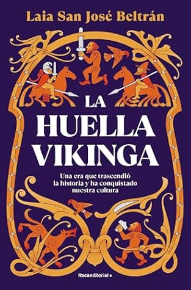

La huella vikinga: Una era que trascendió la historia y ha conquistado nuestra cultura
Reseña por Jorge I. Zuluaga

Ver reseña en GoodReads (necesita cuenta)
Confieso que no he visto ninguna serie en televisión o en plataforma de streaming sobre los vikingos (comencé la serie "Vikingos" de NatGeo, pero nunca me enganché del todo); tampoco veo películas de superhéroes (que han explotado bastante el tema de las mitologías nórdicas y germánicas, como me entero por este libro), ni soy aficionado a los videojuegos. Todo esto para decir que mi aproximación al mundo de los vikingos había sido hasta aquí bastante pobre, incluso a través de los productos de la cultura popular que han propagado muchos de los bulos sobre las culturas nórdicas dentro de las que se enmarcó el "período vikingo" (entre el 700 y el 1100 e. c.).
Obviamente tenía una idea general sobre "los vikingos", pero este libro me ha abierto bien los ojos sobre las verdades y los bulos que circulan acerca de ellos. Naturalmente ahora quiero ver las series y leer más libros sobre este período de la historia de Europa. Pero ahora me siento con mejores elementos para juzgarlos.
El estilo de la historiadora Laia San José Beltrán, su autora, me ha encantado. Confieso que al principio sentí algo de reserva al saber de su reconocimiento e influencia en las redes sociales. Mis sesgos me hicieron creer que me esperaba por delante un libro escrito con el estilo de los influencers del siglo XXI, con un lenguaje más parecido a un transcript de un video de YouTube y con la profundidad característica de esta generación superficial.
Pero me equivoqué de cabo a rabo. Si bien el estilo de Beltrán es en muchas ocasiones descomplicado y dicharachero (pensé que su origen era andaluz y ahora sé que ella es de Barcelona), esto no le resta ni cinco de calidad al que es definitivamente un texto escrito con rigor académico.
Para ponerlo en pocas palabras, el libro hace un viaje por el mundo de los vikingos; el mundo de las leyendas creadas principalmente en el siglo XIX cuando las sagas islandesas de la Edad Media escandinava (que empezó al finalizar el tiempo en el que hubo vikingos) fueron traducidas a las lenguas vernáculas de Occidente y esos individuos hipermasculinos, que llevaban gorros con cuernos y viajaban en barcos con la quilla en forma de dragones, fueron prácticamente “inventados”; pasando por el mundo de los pueblos del norte de Europa de donde salieron los hombres y mujeres que hicieron de vikingos por casi tres siglos, llevando y trayendo a veces sufrimiento y esclavitud en los lugares en los que desembarcaban y otras, productos que intercambiaron con culturas de toda Europa. Hasta llegar a las historias que nos cuenta la arqueología, la filología e incluso la medicina sobre quiénes fueron esas personas que tanto hemos admirado, de cómo eran sus mitos, sus dioses y sus ritos, que no son solo los de los vikingos, porque insisto en que, como le aprendí a Beltrán, fue mucho más amplia la variedad de culturas y pueblos de los que salieron las personas que hicieron de vikingos.
Los apartes dedicados a la llegada de exploradores de pueblos nórdicos (noruegos, islandeses, groenlandeses) a América y la influencia cultural que el descubrimiento de esos viajes ha tenido en Norteamérica (buena o mala) me pareció un capítulo muy interesante del libro. Me hago a una idea más clara de quiénes fueron los hombres y las mujeres, provenientes del mar del Norte, que desembarcaron e intentaron colonizar tierras en América.
Me encantó descubrir, muy desde el principio, que los análisis de la cultura de los pueblos que "hicieron el vikingo" (en lugar de "los vikingos", que no es propiamente la denominación de un pueblo o una cultura, como ella nos aclara muy desde el principio) y de todas las personas que recogieron siglos después muchas de las historias que les rodearon, siempre tienen una perspectiva de género.
Confieso que incluso disfruté pensando en todos los machirulos hipermasculinos (soy hombre, he sido machista, pero la lectura me ha hecho entender los privilegios que tengo y los errores que he cometido al concebir lo masculino como referente de fuerza y hasta de cultura), en esos machitos que tal vez empezaron a leer este libro y pensaron que sería una historia convencional de sus admirados vikingos; me los imagino sorprendidos al empezar a leer, muy desde el principio, a una autora feminista, una experta en vikingos, una amante de la cultura, mitología y escritura nórdica, pero muy consciente de los serios problemas que tiene admirar ciegamente el universo vikingo sin reconocer que en gran parte fue creado por la visión androcéntrica y machista del Renacimiento europeo y, especialmente, del período victoriano.
Me divertí, pues, pensando en quienes abandonaron el libro sin adentrarse más en él. Por supuesto, no fue mi caso. Entre más leía, más descubría la motivación de su autora para organizarlo en la forma en la que lo hizo. Es cierto que me habría gustado leer un libro más tradicional sobre los vikingos como mi primera aproximación a este fenómeno cultural, pero a la larga descubrí que es mejor aprender así, de la manera aparentemente espontánea en la que Beltrán nos introduce los distintos temas de esta cultura.
En fin. Un muy buen libro. Lo recomiendo sin reservas.